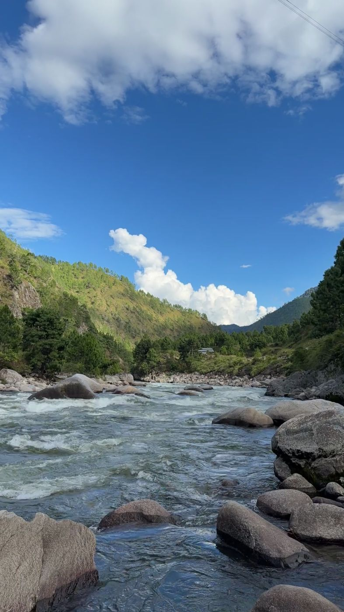
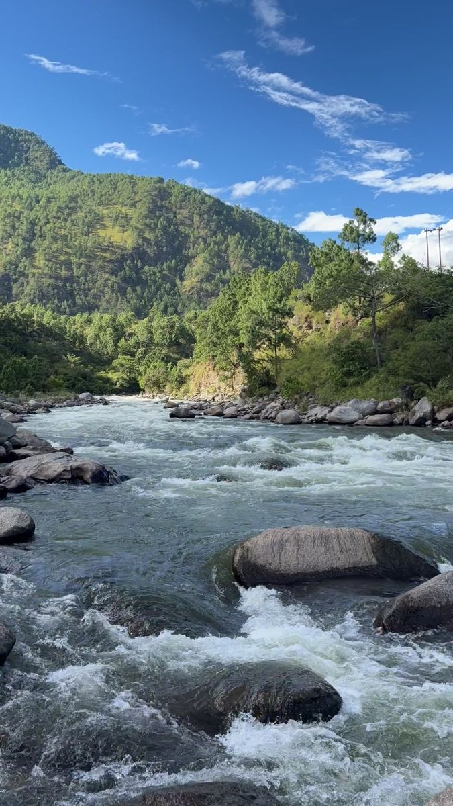

Down to the river.
The fishing road runs from [place] down to the river.
Ask us about the fishing road and the nets.
In the [morning / evening] people go down with their nets, and you can [watch / join, with a guide].
[What is caught, in Bugun and in English, and in which season.]
[A closed season, or a rule for visitors, as the community decides it.]
Please ask before you photograph a person, or what they have caught.

By boat.
[Where the boat goes, how long it takes, how many people it carries.]
- Boatman
- [who runs it]
- Price
- [the price]
- Life jackets
- [yes, for everyone]
Ask us about the boat.